Next: About this document ...
Name: Calculus III
Final Exam Problems
Top Sekrit!
Instructions: Show all work to receive full or partial credit. You may use a
scientific calculator/graphing calculator. All University rules and
guidelines for student conduct are applicable.
- 1.
- Find the angle between vectors
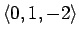
and
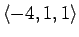
.
- 2.
- If
calculate 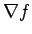
,
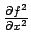
and
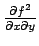
.
- 3.
- Find the equation of the plane passing through the points (0,0,1),
(3,2,1) and (6,0,1).
- 4.
- What is the area of the triangle with vertices (0,1,2), (3,-1,2),
(3,3,-1)?
- 5.
- Find the maximum and minimum value of
f(x,y) = x2 y + 3 x2 y2 + 2
for
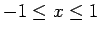
and
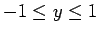
.
- 6.
- Find the equation of the tangent plane to the surface
at the point
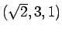
.
- 7.
- Calculate the directional derivative of
f(x,y) = ex (x + y2)
at (0,1) in the direction
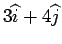
.
- 8.
- If
find
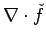
and
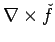
.
- 9.
- Find the volume under the surface
f(x,y) = 4-x2-y2
over the region
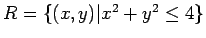
.
- 10.
- Find the centroid of the object sketched below assuming that it has
uniform density.
- 11.
- Find the flux of
on the cube shown below.
- 12.
- Find
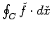
where
and C is the path shown below leading from (1,-5) to (-1,-5).
- 13.
- Find the mass and centroid of the object sketched below assuming
the material has uniform density
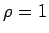
.
- 14.
- Calculate
where
f(x,y,z) = xyz
and R is the region bounded by the xy-plane, xz-plane, yz-plane,
the plane y=2 and the plane
x+z = 1.
- 15.
- Calculate
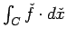
where
over the path C shown below.
- 16.
- Calculate
where
where C is the line segment connecting (0,0,0) to (1,2,3).
- 17.
- Find
where
over the path C.
- 18.
- Calculate the center of mass of this 3/4 section of a washer.
- 19.
- Calculate
where R is the upper surface of a sphere of radius 2 centered at the
origin.
- 20.
- Find a potential for the following vector field.
Next: About this document ...
Louis F Rossi
2002-03-25